Supporting almost 100 vendors through their relocation from the old NIS building, with dislocation grants and business workshops.

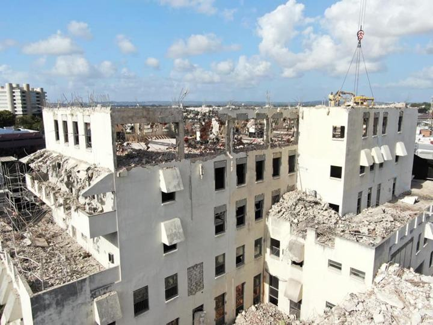

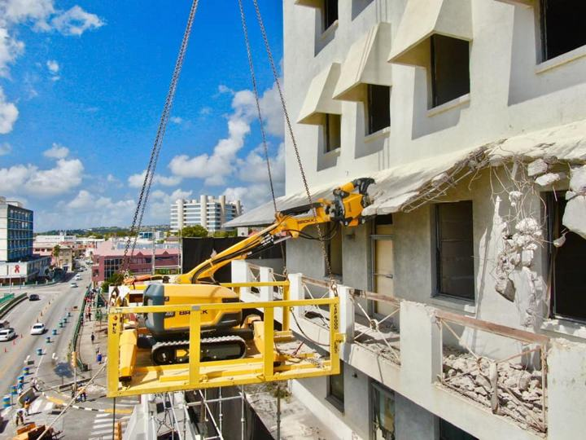

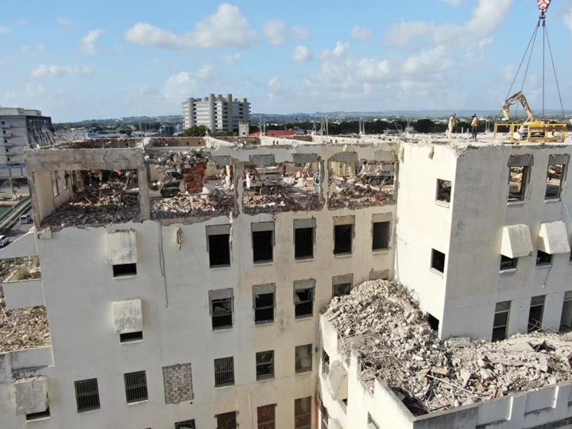

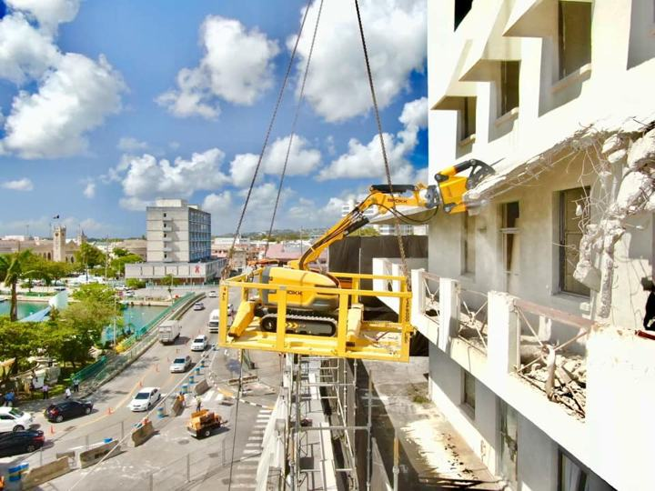

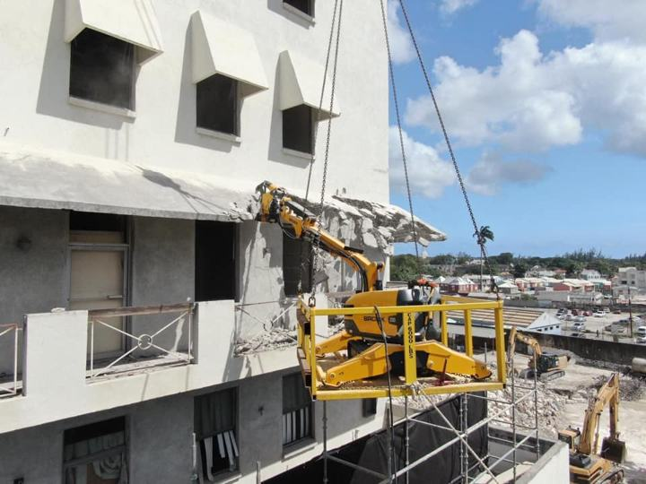

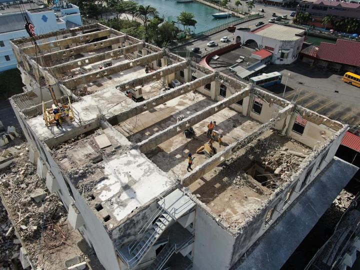

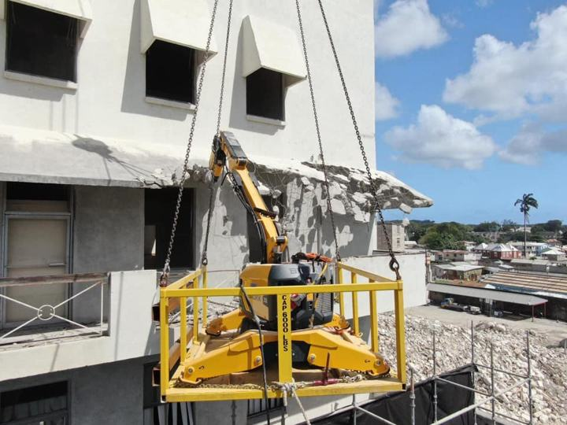

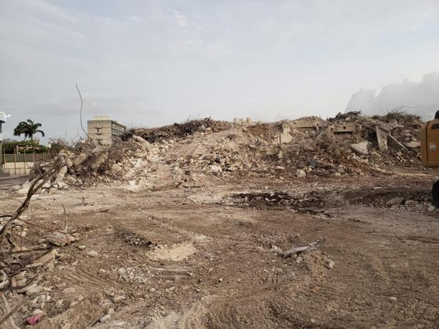

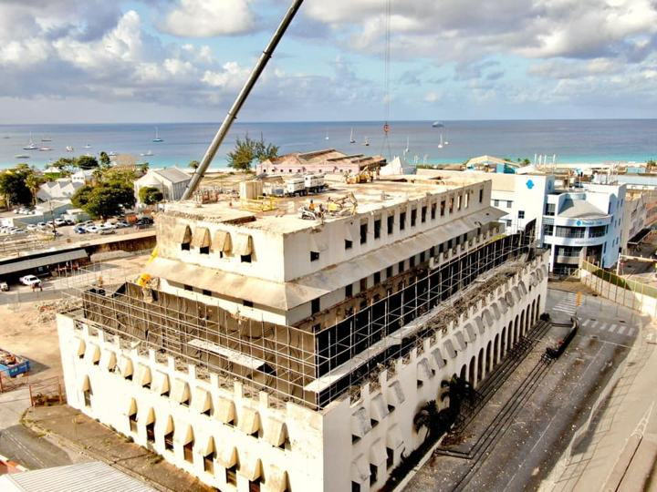

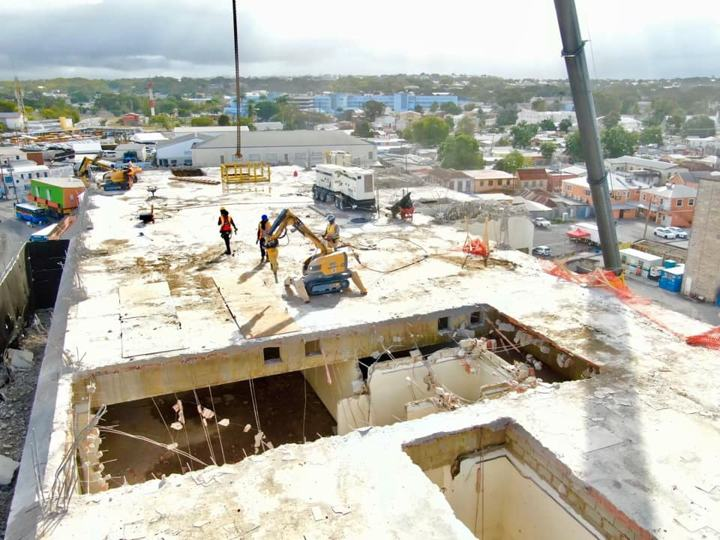

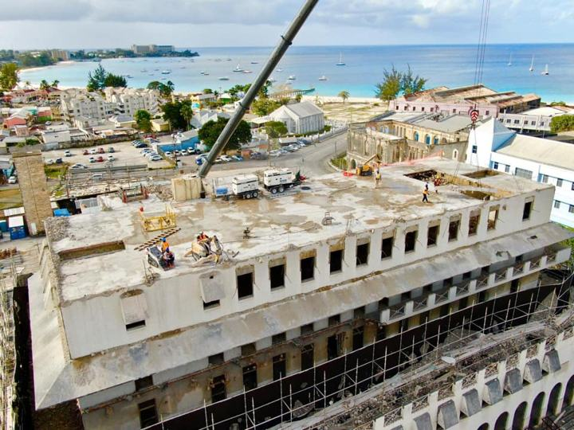

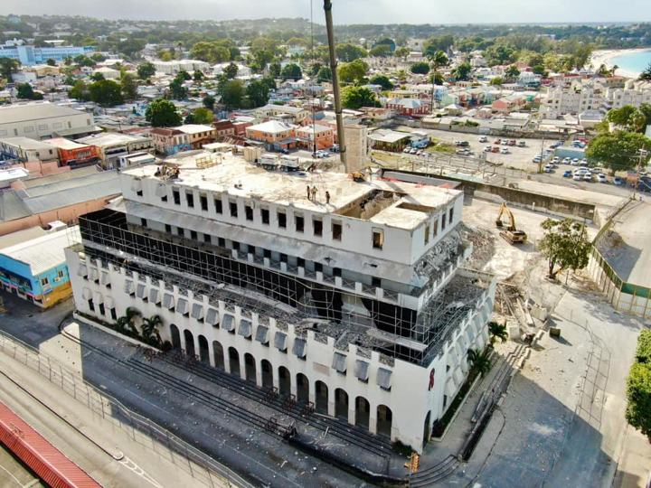

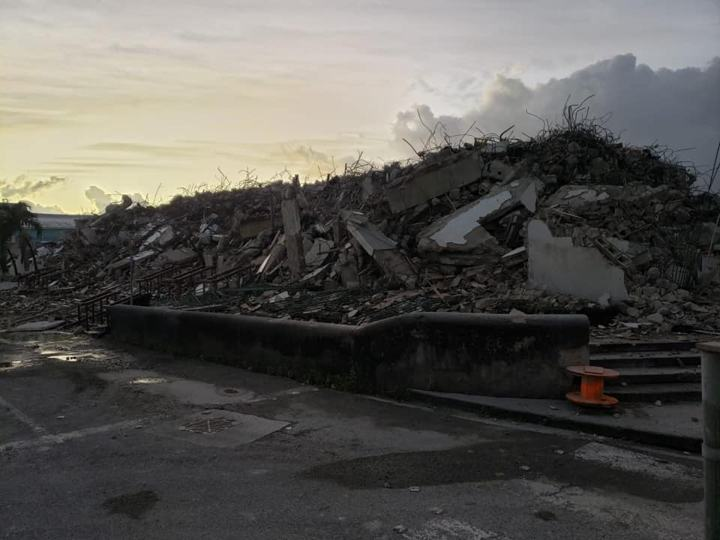

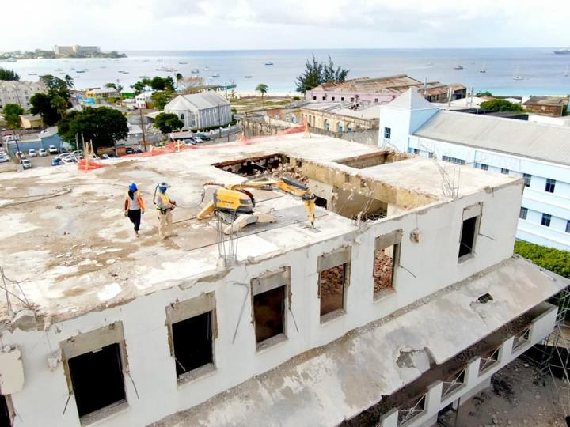
Preparatory work for the Bridgetown Transformation Project, part of the Government’s plans to redevelop The City. A major initiative and first phase of the project will entail the construction of the Golden Square Freedom Park and the completion of the Fairchild Street Market Village. “The era of Golden Square is not to be left in the 1930s but it is to be used forever as a platform to carry this country to a higher calling always. “So over the course of the next few months, when we finish the wonderful work that will be done at Golden Square Freedom Park . . . may this be a space of peace and reflection, education, agitation and nation-building,” – Prime Minister Mia Amor Mottley.
The Bridgetown Transformation Project, which is being executed by the Barbados Tourism Investment Inc. (BTII), will see Vision Development Inc., and C.O. Williams leading the construction that is expected to begin with the demolition of the former National Insurance building, the nearby Barbados Fire Service building in Probyn Street and temporary markets.


Government Relocation of Vendors
Almost 100 vendors who have been moved from their stalls to allow this week’s demolition of the old National Insurance Scheme building, the Fire Service headquarters and the temporary market on Probyn Street, have been given dislocation grants !!!Chief Executive Officer of Haigh Communications Joy-Ann Haigh, whose company is carrying out public relations for the Bridgetown Transformation Project was
Haigh articulated the plight of the vendors were not handed their cheques as yet because they were busy maintaining their stalls.
“So they were in the process of selling and trying to clear up while we were giving out the cheques.”
Haigh explained that the dislocation grants will assist the vendors with meeting their personal expenses and commitments, while this phase of the project takes place. She said: “During this time the Transport Board is also seeking to clean up that specific area for their tenants by cleaning and carrying out some repairs to the stalls. In addition, the Urban Development Commission (UDC) will start the process of getting the kiosk ready.
During this time Haigh Communications Inc organized a series of workshops for the vendors which included finance, marketing and sales with the Ministry of Health coming in to conduct a workshop on best practices when serving food.
Communications Specialist Ms. Joy-Ann Haigh is quoted stating:
“The transformation is not just about demolishing a building and building a kiosk, it is also about the people. We need for the people to transform too because we want to ensure a cleaner Bridgetown and increasing their sales”.
This mere interaction adequately showcases the excellent leader that Haigh Communications has to tackle the many public relations that often occur.